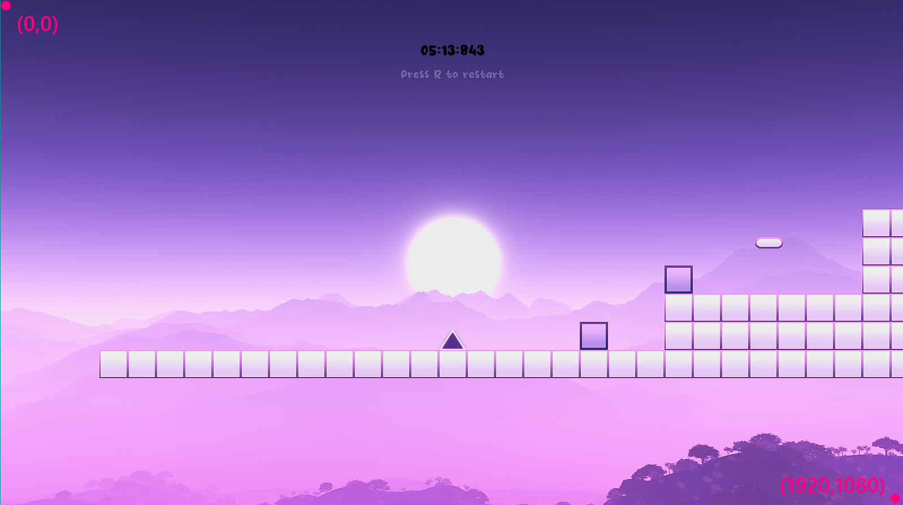

Geometry Run
Video Demo: https://youtu.be/TC-OAGXKckQ
Overview and Game Logic
Geometry Run is a puzzle/platformer. The goal of the game is to reach the end point with the least time possible. The lower the time, the better the score. Players are encouraged to replay for a better score. This game is written in lua using the LOVE framework.
Architecture
main.lua
This contains the main game loop and the majority of the logic. Other lua scripts are imported using
require.
require "entity"
require "player"
require "wall"
require "box"
require "platform"
require "longPlatform"
require "invisibleBarrier"
Some libraries require a reference to access their fields, luckily require can also return a reference to the imported lua script.
Object = require "classic"
lume = require "lume"
Libraries
- love
The main framework of this game. The LOVE API enables access to its callbacks such as
load(),update()anddraw(). These callbacks are responsible for initialisation, loop and visualisation of the game. Other modules such aslove.graphics,love.sound,love.filesystemprovides support to create a complete gameplay experience.
- Math
This build-in library handles mathematical operations.
Math.ceil(),Math.floor()andMath.abs()are used extensively to make counting algorithms possible for animation and GUI purposes.
- lume
This library enables system file stream in and out of the lua application. Player highscores are stored locally at "..user\AppData\Roaming\GeometryRun\savedata.txt".
- Classic
This library is essential to the data structure of the game. It enables the creation of classes and their instances and the ability to inherit subclasses from a superclass.
Love framework
LOVE is an open source lightweight framework that provides essential tools to make 2D games. The most important feature it has is its callbacks.
love.conf(t)
This is first callback recieved from Love. Inside this function, the game's launch configurations are set. This callback is only executed once per game session.
--This function is called before load()!
function love.conf(t)
t.window.width = 1600
t.window.height = 900
t.window.minwidth = 1200
t.window.minheight = 720
t.window.borderless = false
t.window.resizable = true
t.window.icon = "/sprites/player/playerJump1.png"
end
love.conf() does not need to be inside main.lua.
love.load()
This is the second callback from Love. This is where the initialisation of variables, tables and their fields take place. This callback is also only executed once per game session.
function love.load()
------game fields-------
game =
{
state =
{
menu = false,
tutorial = false,
prep = false,
playing = false,
gameOver = false,
}
}
WINDOWS_WIDTH = love.graphics.getWidth()
WINDOWS_HEIGHT= love.graphics.getHeight()
---------gui fields--------
menuTextEntryDelay = 0.5
score = 0
score_text = ""
timer = 0
fontPath = "/font/Xomai.ttf"
boxIMG = love.graphics.newImage("/sprites/box.png")
-------------sfx------------
bgm = love.audio.newSource("/sounds/bgm.ogg","stream")
bgm:setVolume(0.3)
bgm:setLooping(true)
bgm:play()
--------check for saved data------
if love.filesystem.getInfo("savedata.txt") then
print("HAVE FILE")
local file = love.filesystem.read("savedata.txt")
local data = lume.deserialize(file)
highscore = data.highscore
highscore_text = formatScore(highscore)
else
highscore = 0
end
---------init all objs---------
player = Player(-100,450)
b1 = Box(150,500)
p = Platform(460,350)
objects = {}
table.insert(objects,player)
table.insert(objects,b1)
table.insert(objects,p)
---------init tile map---------
walls={}
map = {
--2D table here
}
---------init game state------
clearGameState()
game.state.menu = true
love.window.setTitle("Geometry Run")
end
Tables are also used to group variables in order to reuse common names.
love.update(dt)
This is the main game loop. This function is called every frame and all code inside is executed in the same frame. The dt argument is the time elapsed of the last frame. Many logic require this value to correctly increment their quantities namely player movements, animation updates, collisions, physics, scoring and more.
Assuming the application runs at 60 FPS, on average dt will be equal to .
function love.update(dt)
-- cache the window size every frame for scalable GUI
WINDOWS_WIDTH = love.graphics.getWidth()
WINDOWS_HEIGHT= love.graphics.getHeight()
if game.state.menu or game.state.tutorial then
---------UI ANIMATIONS----------
if menuTextEntryDelay > 0 then
menuTextEntryDelay = menuTextEntryDelay - dt
end
if menuTextEntryDelay < 0 then
loopMenuValue(dt,menuTextFadeTime,menuTextAlpha)
end
end
if game.state.playing then
----------------entity physics updates--------------
for k, v in ipairs(objects) do
v:update(dt)
end
--resolve all collisions before updating to next frame
local isContinueCheck = true
local limit = 0
while isContinueCheck do
isContinueCheck = false
limit = limit +1
if limit > 5 then
break
end
for i = 1, #objects-1 do
for j = 1+i, #objects do
local collision = objects[i]:resolveCollision(objects[j])
if collision then
isContinueCheck = true
end
end
end
end
-----------game updates------------
timer = timer + dt
score = round(timer,3)
score_text = formatScore(score)
----------UI updates---------------
loopPlayingValue(dt,pTextFadeTime,pTextAlpha)
end
end
The while-loop inside of this function will be executed in one frame, so it is possible to have lag spikes if the while-loop takes too long to break.
love.draw()
This is the second game loop that runs in the next frame after love.update(). This loop is responsible for drawing visuals on the game window. The love.graphics module is used heavily here to change fonts, set color of the pen used by LOVE to create visuals, print text on the screen etc.
function love.draw()
if game.state.tutorial then
---background---
color = util_RBGAtoDEC(243, 165, 251, 1)
love.graphics.setBackgroundColor(color)
---instruction 1---
changeFont(20)
love.graphics.setColor(0,0,0,1)
love.graphics.printf("Arrow keys to move.", 0, WINDOWS_HEIGHT /2 - 60,WINDOWS_WIDTH,"center")
---instruction box---
love.graphics.setColor(1,1,1,1)
love.graphics.draw(boxIMG,WINDOWS_WIDTH/2 + 250, WINDOWS_HEIGHT/2 -30 -(0.75*(boxIMG:getHeight()/2)) ,0,0.75,0.75)
love.graphics.setColor(0,0,0,1)
love.graphics.printf("Boxes are pushable.", 0, WINDOWS_HEIGHT /2 -30 ,WINDOWS_WIDTH,"center")
--fade text in and out after initial delay
if menuTextEntryDelay < 0 then
love.graphics.setColor(1,1,1,menuTextAlpha)
love.graphics.printf("Press SpaceBar to continue", 0, WINDOWS_HEIGHT /2 +90 ,WINDOWS_WIDTH,"center")
end
--footer
love.graphics.setColor(0,0,0,1)
love.graphics.printf("Press ESC to quit", 0, WINDOWS_HEIGHT - 30 ,WINDOWS_WIDTH,"center")
end
end
Graphics drawn by love.graphics.draw() or love.graphics.print() uses the pen color set by the love.graphics.setColor(r,g,b,a). So it is common that before each image is drawn, the pen color is set back to white by love.graphics.setColor(1,1,1,1).
love.keypressed(key)
This callback is triggered everytime a key is pressed by the user. The key argument stores the name of the keypress as a string. Comparing a predefined key to the key variable enables user input to influence the state of the game.
function love.keypressed(key)
if key == "escape" then
love.event.quit()
return
end
if game.state.playing or game.state.gameOver then
if key =="r" then
hotRestart()
clearGameState()
game.state.prep = true
end
return
end
end
In the case of player movement, love.keyboard.isDown() is used inside player.lua instead of main.lua. This is crucial for collisions to work properly. See Collisions for more detail.
Game State
This game has 5 scenes and therefore 5 states:
- menu
- tutorial
- prep
- playing
- gameOver
These state are used as boolean flags inside
love.update()andlove.draw()to achieve scene dependent logic. There could only be one active state(scene) at a time!
--initialisation of states
function love.load()
game =
{
state =
{
menu = false,
tutorial = false,
prep = false,
playing = false,
gameOver = false,
}
}
end
States can be changed on game events, or triggered by user input!
An example of using state flags to tell Love what to draw depending on the state of the game:
function love.draw()
if game.state.menu then
--draw menu scene
end
if game.state.tutorial then
--draw tutorial scene
end
if game.state.prep then
--draw preperation scene
end
if game.state.playing then
--draw game scene
end
if game.state.gameOver then
--draw gameOver scene
end
end
--resets all state flags
function clearGameState()
game.state.menu = false
game.state.tutorial = false
game.state.prep = false
game.state.playing = false
game.state.gameOver = false
end
clearGameState() is always called before setting a new game state to true.
Menu
The menu state is the default start up state. This scene consist of the title, a background image and one animated text to inform the player that pressing spacebar will begin the game. Once spacebar is pressed, the game will switch to the tutorial state.

Tutorial
The tutorial scene gives the player 3 instructions, displays a background color, contains 1 animated text that informs the player pressing spacebar will continue to the next stage of the game. Once spacebar is pressed, the game will switch to the prep state.
Preperation
The preperation scene has one simple text, a background color, a timer and a highscore if the player has play this game at least once. Once the timer reaches 0, the game will switch to the playing state.

Playing
This is where the actual game takes place. This scene contains a static map, some obstacles that are either moveable or static, an animated player, a timer, a background image, an animated text to inform the player pressing "r" will restart the game scene, and an animated flag representing the end of the map. This game state will also activate physics behaviour for the player to movearound and collide with objects and not fall through the map. If the player presses "r", this game state will be set to prep and all map objects and timers are reset. If the player reaches the flag, the game state will be set to gameOver.


Gameover
This is the last scene of the game. This scene consist of a text that congratulate the player if they reach a high score or encourage them to try again if they did not. It also consist of an animated text that informs the player pressing "r" will let them retry the level. If the player press "r" the game will switch back to prep.
In any given state, pressing "ESC" will quit the application.
Data Structure
This game consist of a parent/superclass object called Entity and all other objects are child/subclass of Entity. The Entity class act as a blueprint for these subclasses: Player, Wall, Platform, LongPlatform, Box and InvisibleBarrier. In plainer words, the player, the wall, the platform, the long Platform, the box and the invisible Barrier are all entities, but the player for example, can have extra functionalities that differs from other entities such as the wall or the box.
The
classiclibrary allows for the implementation of classes in lua.
The classic library must be imported in either Entity.lua or main.lua. The latter is possible because Entity.lua is imported anyway after importing classic:
--in main.lua
Object = require "classic"
require "Entity.lua"
To create a the Entity class:
--in Entity.lua
-- Entity is now a class extended/inherited from the "classic" base object called Object
Entity = Object:extend()
In Entity.lua, there are 3 non collision related functions defined.
An instance of
Entitycan be created by callingEntity(),Entity:new()is the constructor for the baseEntityclass.
function Entity:new(x,y,image_path)
--all subclasses of Entity have these fields as well
self.x = x
self.y = y
self.image = love.graphics.newImage(image_path)
self.width = self.image:getWidth()
self.height = self.image:getHeight()
self.materialStrength = 0
self.name = ""
end
Inside of the constructor function, all base fields of Entity are declared and populated.
function Entity:update(dt)
--handles movement or collision related logic (more detail later)
--updates self.x and self.y
end
function Entity:draw()
--draws image at coordinates self.x, and self.y
love.graphics.draw(self.image,self.x,self.y)
end
The self keyword in lua is a way to reference the instance of the object passed into the function. When a function is defined with a : symbol instead of a ., any instance calling such functions must pass itself into the function as an argument, for example: <instance_of_entity>.func(self) or <instance_of_entity>:func()
Subclasses of
Entityinherit these base functions and they can override them.
Since Player is the most complicated subclass of Entity and other subclasses derives from the same yet simpler concept, the understanding of the working principle of Player is transferrable to said subclasses.
To create a subclass
Playerthat inherits from superclassEntity, write on the first line ofplayer.lua:
Player = Entity:extend()
In player.lua, the new() constructor function is overrided to take only x and y as arguments.
However, in order to create an instance the Player subclass, the super class Entity have to be instanced first.
All subclass constructors does not have
image_pathas argument because within their respective scripts, the image path is hard coded in the argument when theEntitysuperclass is instanced.
--inside player.lua
Player = Entity:extend()
function Player:new(x,y)
--instances the superclass with the instance of this subclass using the "self" keyword
Player.super.new(self,x,y,"sprites/player/player1.png")
--Player specified fields (in super class)
self.materialStrength = 10
self.name = "player"
--Player's unique fields (NOT in super class)
self.canJump = false
end
Subclasses can have their unique fields declared inside their own constructor. These fields will not exist in or affect the superclass.
Note that the self keyword here represents the instance of player and super represents the instance of Entity. If Player.super:new() is used instead, the Player subclass will not be instanced because the : symbol here passes the super's instance into Entity's new() function. For details please read classic's documentation.
Inside main.lua, the player object is instanced inside love.load() and stored inside table objects.
function love.load()
--initialise player at (-100,450)
player = Player(-100,450)
objects = {}
table.insert(objects,player)
end
Recall in Player.lua, Player:new() only has 2 arguments!
Once the player is instanced as the variable player, all functions inherited from Entity or uniquely declared inside the Player subclass can be called using:
player:update()
For the purpose of this game, physics are handled in the update() function in all subclasses of Entity.In the Player subclass, user input and movement are processed on top of physics. So it is important that the data structure this game chooses allows for an inheritance structure where complex subclasses share the basic functionality of its sibling classes without the need to repeat the same code.
The elegance of the inheritance structure will be revisited in the Physics section.
Physics
The physics of this game comprise of 2 main aspects:
- Kinematics
- Collisions
To begin understanding the physics of the game, having a frame of reference (position of (0,0)) and defining a pair of orthogonal axis is vital.
By default, the screen's top left corner will be positioned at (0,0) of the coordinate system, the horizontal axis increases from left to right while the vertical axis increases from top to bottom.
In a 1920x1080 sized window, the bottom right pixel will be exactly (1920,1080)
Kinematics
The kinematics of this game has 2 parts: gravity and movement. Both are essential for creating realism for the player when they traverse on a bunch of "floating" blocks.
Movement
Movement is the core feature of most games. In this game, the player is controlled by user input. The way to convey movement is to increment the horizontal and vertical position of the player in the love.update() loop and then draw the player at the updated position in the love.draw() loop.
To make sure that all entities have their phyiscs updated synchronously, all entity instances will call their respective
update()function insidelove.update().
function love.update(dt)
for k, v in ipairs(objects) do
v:update(dt)
end
end
The objects table contains all entities except walls.
All entities have a position related field self.x and self.y. They represent the current horizontal and vertical position of the entity.
function Entity:new(x,y,image_path)
self.x = x
self.y = y
self.spawnX = x
self.spawnY = y
self.image = love.graphics.newImage(image_path)
self.width = self.image:getWidth()
self.height = self.image:getHeight()
self.name = ""
end
self.x and self.y are set to the spawn coordinate of that entity at initialisation, these two variables will be updated frequently if the entity is a dynamic object such as the player or the boxes.
To move the player, increment the
self.xorself.yvariable inupdate().
--inside player.lua
function Player:update(dt)
-- moves player to the right by 200*dt units per frame
self.x = self.x + 200 * dt
end
The 200 here is a hardcoded value that represents the speed factor of the player. 200 is not 200 m/s per say but a value that could be calibrated to determine how fast the player moves.
However, the player requires unique features, therefore player:update() not only uses the base update() logic from Entity, but with code that handles user input, jumping, animations and sound effects as well.
Combine user input and movement using the
love.keyboardmodule.
function Player:update(dt)
-------------jump logic------------
--see later
--------gravity and collisions-------
Player.super.update(self,dt)
--see later
--------movement logic------------
if love.keyboard.isDown("left") then
self.x = self.x - 200 * dt
elseif love.keyboard.isDown("right") then
self.x = self.x + 200 * dt
end
------------animation logic---------
--see later
------------sfx updates--------------
--see later
end
When the user presses the left arrow key, the player moves to the left; when the user presses the right arrow key, the player moves to the right.
Finally, to visualise movement, the player along with all other objects are drawn on the screen one frame after love.update() is called.
--inside main.lua
function love.draw()
for k, v in ipairs(objects) do
v:draw()
end
end
Recall that
v:draw()calls the defined functiondraw()inside the superclassEntity, if no subclasses overrides this function.
function Entity:draw()
love.graphics.draw(self.image,self.x,self.y)
end
This is a simiplified way to implement movement, the player will eventually move out of the screen. For games that have a map that is bigger than 1920x1080 such as this one, the game window has to follow the player whilst keeping static objects in the correct relative position to the player. See Camera Follow Effect for more details.
Gravity and jumping
Gravity is required for the player and boxes only. Since all game scene object are entities, inside the constructor of Entity, fields such as downwardsVelocity and gravity is added. downwardsVelocity is the velocity factor of the entity, whilst gravity is the acceleration factor. gravity is kept at 900 for the player, whereas the Box object has gravity set at 850 as it simulates "air resistance" so it falls slower than the player. All other entities are static objects, so their gravity values are set to zero.
--all objc
function Entity:new(x,y,image_path)
self.x = x
self.y = y
self.image = love.graphics.newImage(image_path)
self.width = self.image:getWidth()
self.height = self.image:getHeight()
self.materialStrength = 0
-- Add the gravity and weight properties
self.downwardsVelocity = 0
--g is constant across all objects
self.gravity = 900
end
--inside box.lua
function Box:new(x,y)
Box.super.new(self,x,y,"sprites/box.png")
self.materialStrength = 1
self.name = "box"
self.gravity = 850
end
Besides adding new fields to the constructor of Entity, the update() function of Entity needs to be appended as well. The downwards velocity factor of all entities are updated every frame. The bigger their gravity variable, the faster downwardsVelocity will grow. Following that, the vertical position of the entity is incremented.
function Entity:update(dt)
self.downwardsVelocity = self.downwardsVelocity + self.gravity*dt
self.y = self.y + self.downwardsVelocity*dt
end
Recall objects moves by a very small amount per frame using the dt argument, a value bigger than 1 can be multiplied onto dt to achieve a larger increment per frame
Implementing jumping is similar to gravity, but in the opposite direction. Since the vertical position of the player is incremented by a velocity factor, changing downwardsVelocity to a negative value will send the player in a upwards trajectory.
jump()is called when the user press the up arrow key.
function Player:update(dt)
-------------jump logic------------
if love.keyboard.isDown("up") then
self:jump()
end
end
function Player:jump()
if not self.canJump then
return
end
jumpSound:play()
self.downwardsVelocity = -350
self.canJump =false
end
self.canJump is a boolean gate that controls whether the player can jump or not. This variable is set to false when the player jumps and when the player is in mid-air, and is set to true when the player collides with the top surface of any other entity
Fortunately, the player will not indefinitely travel upwards, thanks to how gravity is implemented. Since downwardsVelocity is always increasing per frame, it will eventually become zero and turn positive again, effectively modelling the vertical velocity of a realistic projectile motion.
Collisions
In almost every platformer, collisions are the bread and butter of the game. All entities in this game have collision built into their base functionality in entity.lua. Before detailing how collisions are handled in this game, the basic concept of collision has to be discussed.
Detecting Collisions
Consider 2 rectangles. Rectangle A has width A.width and length A.length while rectangle B has width B.width and length B.length. Rectangle A has coordinates A.x and A.y while rectangle B has coordinates B.x and B.y. These cooridnates are pivoted at the top left corner of these rectangles.
The thickness of the borders are negligible, recall that the top left corner of the screen is (0,0) and x increases rightwards whereas y increases downwards.
In order for these 2 rectangular objects to collide, the following conditions must be satisfied simultaneously:
-
A.x + A.width > B.x -
A.x < B.x + B.width -
A.y + A.height > B.y -
A.y < B.y + B.height
To check for collision between entities, an instance of entity calls checkCollision() defined in entity.lua, while passing the instance of another entity as variable. checkCollision() returns true when all the conditions are met and false otherwise.
The entity instance that called
checkCollision()will always be referenced by theselfkeyword.
function Entity:checkCollision(target)
return self.x + self.width > target.x
and self.x < target.x + target.width
and self.y + self.height > target.y
and self.y < target.y + target.height
end
Finally, all entities are put in a loop and collisions between them are checked without repeat (order does not matter here, meaning if A checked collisions with B, B does not need to check collisions with A).
function love.update(dt)
for i = 1, #objects-1 do
for j = 1+i, #objects do
objects[i]:checkCollision(objects[j])
end
end
end
#objects returns the number of elements inside the table objects.
Checking for collisions is only the first step, resolving them accordingly will be the next.
Resolving Collisions
2-body Collisions
Resolving a collision involves breaking apart a collision and setting the 2 colliding bodies in a way such that they are just touching each other. However there is an conundrum:
If one body collides with another, which colliding body should move? Should the moving body be "bounced" back? Or should the recieving body be pushed forward?
Fortunately for games, it is intuitive that static walls/plaforms should not be pushed by anything, while dynamic objects such as boxes should be able to move in the direction of where the player is pushing them from.
To implement such behaviour, a materialStrength field is added into the each entity.
--in Entity.lua
function Entity:new(x,y,image_path)
----------------
--other fields--
-- ... --
----------------
self.materialStrength = 0
end
--in platform.lua
function Platform:new(x,y)
Platform.super.new(self,x,y,"sprites/platform.png")
self.materialStrength = 100
end
The materialStrength variable is set at initialisation by each subclass of Entity.
Static entities will always have a higher strength value than dynamic entities, whereas between dynamic entities, the one that "moves" the rest of the entites will have a moderate strength value and the rest will have the lowest strength value.
In this game, the strength values are distributed as follow:
Walls and platforms: 100
Player: 10
Box: 1
When a light object collides with a heavy object whilst coming from the left, the light object is send back to the left while the heavy object stays in place. As for how much the object has to be sent back, that depends on the width of the light object only.
Consider the same rectangle A and B and they are now subclasses of Entity. A travels from left to right colliding with a static object B. A will be sent back to the left by just the right amount where its right side touches B's left side, and B remains in the same position.
checkCollision()is called inside a new functionresolveCollision(). IfcheckCollision()returns true, and if the caller ofresolveCollision()is ligher than the instance it passes ,target, and if the caller is on the left of the target, the collision is resolved.
--in main.lua
function love.update(dt)
-----loop over all objects----
instance_A:resolveCollision(instance_B)
-------------------------
end
*instance_A and instance_B are initialised before the first update() callback. *
-- in entity.lua
function Entity:resolveCollision(target)
-- collision in this frame?
if self:checkCollision(target) then
--if the caller's is heavier than the target, call resolveCollision again with target being the caller and the original caller as the target.
if (target.materialStrength < self.materialStrength)then
return target:resolveCollision(self)
end
--check if mid point of self is more left than the mid point of target
if self.x + self.width/2 < target.x + target.width/2 then
--resolve the collision
self.x = self.x - (self.x + self.width - target.x)
end
end
end
The reason why the caller must be the one calling the resolveCollision() function, it is due to how the last part is written. self is always the one being moved back, never the target. So self must have a smaller strength value than target.
On paper this is how a perfectly head on collision from the left is resolved. However, in most cases, collisions can occur at any incoming direction. The current collision system will break if rectangle A collides with B coming from the top given that A is slightly more to the left than B. Resolving the collision using the code above will result in A snapping on B's left side regardless of how A collides with B, as long as A is slightly more left than B.
checkCollision()only checks for a generic collision at the current frame, it will not give any information about how the collision happened (A hits B from what direction etc).
To tackle this problem, 2 new fields are needed for each entity.
function Entity:new(x,y,image_path)
----------------
--other fields--
-- ... --
----------------
self.lastX = x
self.lastY = y
end
By caching the the position of each entity every frame before any movement/collision updates, at the frame where the collision actually happened. Entities can compare their last-frame positions, to determine whether they were already horizontally colliding or vertically colliding.

When A is about to horizontally collide with B, they must already be vertically colliding and vice versa.
In
Entity:update(),self.lastXandself.lastYare set to the current position of the entity BEFORE any updates.
function Entity:update(dt)
--CACHE FIRST
self.lastX = self.x
self.lastY = self.y
--THEN UPDATE GRAVITY!
self.downwardsVelocity = self.downwardsVelocity + self.gravity*dt
self.y = self.y + self.downwardsVelocity*dt
end
Define a new function, isLastFrameVerticallyColliding(). This functions is called before resolving horizontal collisions by comparing the lastY values of the colliding entities.
function Entity:isLastFrameVerticallyColliding(target)
return self.lastY + self.height > target.lastY
and self.lastY < target.lastY + target.height
end
This is half of the conditions inside checkCollision(), in this case only the vertical collision conditions needs to be met in order to return true.
Finally, puting everything together, horizontal collisions are now resolved without unexpected behaviour.
-- in entity.lua
function Entity:resolveCollision(target)
-- collision in this frame?
if self:checkCollision(target) then
-- vertically colliding in the last frame?
if self:isLastFrameVerticallyColliding(target) then
--if the caller's is heavier than the target, call resolveCollision again with target being the caller and the original caller as the target.
if (target.materialStrength < self.materialStrength)then
return target:resolveCollision(self)
end
--check if mid point of self is more left than the mid point of target
if self.x + self.width/2 < target.x + target.width/2 then
--resolve the collision
self.x = self.x - (self.x + self.width - target.x)
end
end
end
end
The same concept applies to vertical collisions, but for the sake of simplicity in this part, only horizontal collisions are considered. For a step by step demostration of how this game implements its collisions, check Implementing Collision for more.
N-body Collisions
In this game, the player can push a box into the wall and the wall theorectically should stop all entities from going through itself. However, with only 2-body collisions and a single for-loop per frame to check collisions between all objects, the player could potential clip into the box and eventually come to a stop when the it collides with the wall.
To solve this problem, 2 new fields are required to store the temporary material strength obtained during a series of collisions. With this new variable, the box can temporarily share the same strength value as the wall so when the player collides on to it, the player will be pushed back.
function Entity:new(x,y,image_path)
----------------
--other fields--
-- ... --
----------------
self.tempStrengthX = 0
self.tempStrengthY = 0
end
Inside resolveColliion(), if the current frame collision is horizontal, then set self.tempStrengthX to target.tempStrengthX.
function Entity:resolveCollision(target)
-- collision in this frame?
if self:checkCollision(target) then
-- vertically colliding in the last frame?
if self:isLastFrameVerticallyColliding(target) then
--!
--lighter object inherits strength of stronger object
self.tempStrengthX = target.tempStrengthX
if (target.materialStrength < self.materialStrength)then
return target:resolveCollision(self)
end
--check if mid point of self is more left than the mid point of target
if self.x + self.width/2 < target.x + target.width/2 then
--resolve the collision
self.x = self.x - (self.x + self.width - target.x)
end
end
end
end
All temporary strength values are set back to their entities' default every update().
function Entity:update(dt)
--CACHE FIRST
self.lastX = self.x
self.lastY = self.y
--RESET STRENGTH VALUESS
self.tempStrengthX = self.materialStrength
self.tempStrengthY = self.materialStrength
--THEN UPDATE GRAVITY!
self.downwardsVelocity = self.downwardsVelocity + self.gravity*dt
self.y = self.y + self.downwardsVelocity*dt
end
Howevver, this works fine only when the player resolves collision with the box AFTER the box has resolved collision with the wall. Fortunately, while-loops can be used in love.update() to resolve collisions between all objects multiple times in the same frame. So even if the player has resolve collision with the box before the box has its strength updated, the while loop will make sure the player resolves collisions with the box again in the next tick.
resolveCollision()is tweaked slightly to return true when the collision is resolved, it returns false otherwise.
The while-loop is set to break in the begining of the tick, only when there are collisions still being resolved will the while-loop be allowed to continue.
--in main.lua
function love.update()
--resolve all collisions before next user input/gravity update
local isContinueCheck = true
local limit = 0
while isContinueCheck do
isContinueCheck = false
limit = limit +1
-- breaks then there is more than 10 consecutive collisions resolved to let the frame pass
if limit > 10 then
break
end
for i = 1, #objects-1 do
for j = 1+i, #objects do
local collision = objects[i]:resolveCollision(objects[j])
if collision then
isContinueCheck = true
end
end
end
end
end
It is crucial to set a limit to how many consecutive collisions are allowed to be resolved, or the while-loop will go on indefinitely and freeze the application.
Again, the same concept applies to vertical collisions where self.tempStrengthY is set to target.tempStrengthY. The reason behind seperating temporary strength to 2 directions is because vertical collisions should not interfere with horizontal ones. If the player resolved collisions with the "wall" block that is placed under the player, using one temporary strength variable means the player inherited the material strength of the wall, thus affecting its strength comparison horizontally with other entities and cause unexpected behaviours.
Implementing Collision
This game adopts the N-body collision system and an additional filter per collision for anisotropic collision behaviours. An example of such behaviour is when the player collides with the platform from any direction other than from the top, collisions are ignored as to allow the player to jump onto the platform from underneath.
In entity,lua, resolve() abstracts the logic for moving self depending on which direction it approached the heavier object. isAllowResolve() is now called before resolving the collision to filter for unique collision behaviour between certain subclasses.
function Entity:resolve(target,comingFrom)
if comingFrom == "left" then
self.x = self.x - (self.x+self.width - target.x)
--print("moving ".. self.name .. " to the left")
end
if comingFrom == "right" then
self.x = self.x + (target.x + target.width - self.x)
--print("moving ".. self.name .. " to the right")
end
if comingFrom == "up" then
self.y = self.y - (self.y + self.height - target.y)
--print("moving ".. self.name .. " to the top")
end
if comingFrom == "down" then
self.y = self.y + (target.y + target.height - self.y)
--print("moving ".. self.name .. " to the bottom")
end
end
--for anisotropic collision behaviour, default returns true when the entity subclass doesnt override it
function Entity:isAllowResolve(target,comingFrom)
return true
end
Anisotropic collisions are require for player related collisions only,
resolve()andisAllowResolve()are overriden for player specific behaviours inplayer.lua.
Every time the player is resolved upwards, means the player has landed on another entity. In player.lua, the resolve() function is overrided by first calling the base function of resolve() then checking if the player came from above the target.
--only the player needs to reset the jump bool
function Player:resolve(target,comingFrom)
Player.super.resolve(self,target,comingFrom)
if comingFrom == "up" then
self.canJump = true
end
end
Setting self.canJump to true will allow the player to jump again.
When the player collides with any boxes, the box should make a grinding sound with the ground but not when the player is standing on top of the box. In isAllowResolve(), the target class is checked, followed by checking if the player is approaching the target horizontally. If all conditions are met, a sound effect will be played.
This function will return always
trueif no extra behaviours stops the collision from getting resolved.
function Player:isAllowResolve(target,comingFrom)
if target:is(Box) then
if comingFrom =="right" or comingFrom =="left" then
isPlayBoxSound = true
end
return true
end
return true
end
To enable the player to jump through the platforms, create another check for if the class type of the target then check if the player is approaching from the top. If the latter condition is not met, return false and that collision will not be resolved, allowing the player to go through the platform.
function Player:isAllowResolve(target,comingFrom)
if target:is(Box) then
if comingFrom =="right" or comingFrom =="left" then
isPlayBoxSound = true
end
return true
end
if target:is(Platform) or target:is(LongPlatform) then
if comingFrom =="up" then
return true
end
return false
end
return true
end
Finally append all of the above inside Entity:resolveCollision(), along with the vertical part that the previous section left out and a part where all entities will have their downwardsVelocity value set to zero when they collide onto another entity from the top. This concludes how collisions are handled in this game, the exact code snippet below is used in production.
function Entity:resolveCollision(target)
if self:checkCollision(target) then
--RESOLVE horizontal collision
if self:isLastFrameVerticallyColliding(target) then
if (target.tempStrengthX < self.tempStrengthX) then
return target:resolveCollision(self)
end
--lighter object inherits strength of stronger object
self.tempStrengthX = target.tempStrengthX
--self coming from left
if self.x + self.width/2 < target.x + target.width/2 then
if self:isAllowResolve(target,"left") and target:isAllowResolve(self,"right") then
self:resolve(target,"left")
else
-- there is no collision resolved
return false
end
--self coming from right
else
if self:isAllowResolve(target,"right") and target:isAllowResolve(self,"left") then
self:resolve(target,"right")
else
-- there is no collision resolved
return false
end
end
--RESOLVE vertical collision
elseif self:isLastFrameHorizontallyColliding(target) then
if (target.tempStrengthY < self.tempStrengthY)then
return target:resolveCollision(self)
end
--lighter object inherits strength of stronger object
self.tempStrengthY = target.tempStrengthY
--self coming from up
if self.y + self.height/2 < target.y + target.height/2 then
if self:isAllowResolve(target,"up") and target:isAllowResolve(self,"down") then
self:resolve(target,"up")
--all entities will reset their downwards v
self.downwardsVelocity = 0
else
-- there is no collision resolved
return false
end
--self coming from down
else
if self:isAllowResolve(target,"down") and target:isAllowResolve(self,"up") then
self:resolve(target,"down")
else
-- there is no collision resolved
return false
end
end
end
-- there is collision resolved
return true
end
-- there is no collision between the 2 objects in this frame
return false
end
The reason why self:isAllowResolve(target) AND target:isAllowResolve(self) must be checked simuntaneously is because all unique behaviours are overriden in player.lua but self does not always represent the player. In the player-box collison, the box's strength is lower than the player so box:resolveCollision(player) is called instead of player:resolveCollision(box). Forcing target and self to swap places and run isAllowResolve() again will ensure player:isAllowResolve(box) to be called and proceed with the player specific behaviour.
Key Design Elements
Map
The map in the game is created by a 2D table of zeros and ones, representing nothing and a wall tile respectively.
--inside main.lua ; love.load()
walls={}
--each wall image sprite is 50 px in height and width
wallSize = 50
map = {
{0,0,0,0,0,0,0,0,0,0,0,0,0,0,0,0,0,0,0,0},
{0,0,0,0,0,0,0,0,0,0,0,0,0,0,0,0,0,0,0,0},
{0,0,0,0,0,0,0,0,0,0,0,0,0,0,0,0,0,0,0,0},
{0,0,0,0,0,0,0,0,0,0,0,0,0,0,0,0,0,0,0,0},
{0,0,0,0,0,0,0,0,0,0,0,0,0,0,0,0,0,0,0,0},
{0,0,0,0,0,0,0,0,0,0,0,0,1,1,1,1,1,1,1,0},
{0,0,0,0,0,0,0,0,0,0,0,0,1,1,1,1,1,1,1,0},
{0,0,0,0,0,0,0,0,0,0,0,0,1,1,1,1,1,1,1,0},
{0,0,0,0,0,1,1,1,1,1,1,1,1,1,1,1,1,1,1,0},
{0,0,0,0,0,1,1,1,1,1,1,1,1,1,1,1,1,1,1,0},
{1,1,1,1,1,1,1,1,1,1,1,1,1,1,1,1,1,1,1,1}
}
The ones' positions on the 2D table are translated into relative game coordinates in pixels using a simple algorithm inside a for-loop. A Wall object is constructed by calling Wall(). Wall being the subclass of Entity have its own constructor arguments Wall:new(x,y).
function Wall:new(x,y)
Wall.super.new(self,x,y,"sprites/wall.png")
self.materialStrength = 100
self.name = "wall"
self.gravity = 0
end
All wall objects are instanced with the translated pixel values passed in as x and y, and are inserted into the table walls
--inside main.lua ; love.load()
for i, row in ipairs(map) do
for j, col in ipairs(row) do
if col == 1 then
table.insert(walls, Wall((j-1)*wallSize , (i-1)*wallSize))
end
end
end
The top left element of the map table will have game coordinates (0,0) while the bottom right element will have game coordinates with col = 20 and row = 11 in this example.
The walls table is then looped through and each instance of Wall is drawn on the screen by
calling draw().
--inside main.lua ; love.draw()
for k, v in ipairs(walls) do
v:draw()
end
Recall that draw() is defined in Wall's superclass Entity.
--inside Entity.lua
function Entity:draw()
love.graphics.draw(self.image,self.x,self.y)
end
The result of such a map in this example looks like this (ignore the player and the platform):

Animation
There are only 3 animations in the entire game, player running, player jumping and the end waving flag. Animations are created by drawing a different sprite every multiple frames.
The sprites are first initialised and are put into a table. A global variable is then incremented per frame in love.update(). Finally, that variable is turned into an integer using math.floor() and indexed into the sprites table to find a sprite to draw every frame.
-- static fields inside player.lua
run = {}
run.frames ={}
table.insert(run.frames, love.graphics.newImage("sprites/player/player1.png"))
table.insert(run.frames, love.graphics.newImage("sprites/player/player2.png"))
table.insert(run.frames, love.graphics.newImage("sprites/player/player3.png"))
--...
run.currentFrame = 1
run.animationSpeed = 25
jump ={}
jump.frames ={}
table.insert(jump.frames, love.graphics.newImage("sprites/player/playerJump1.png"))
table.insert(jump.frames, love.graphics.newImage("sprites/player/playerJump2.png"))
table.insert(jump.frames, love.graphics.newImage("sprites/player/playerJump3.png"))
--...
jump.currentFrame = 1
jump.animationSpeed = 75
These fields can be static because there is only one instance of player at any given time.
In Player.update(), if the player is in the air, increment the currentFrame variable in the jump table. Otherwise increment the currentFrame variable in the run table. These variables are set back to 1 when they exceed
animationSpeedis multiplied ontodtto adjust how fastcurrentFramereaches the next integer.
function Player:update(dt)
------------animation logic---------
if not self.canJump then
--jump anim if canJump is false
jump.currentFrame = jump.currentFrame + jump.animationSpeed*dt
if jump.currentFrame> #jump.frames + 1 then
jump.currentFrame = 1
end
else
--walk anim if canJump is true
run.currentFrame = run.currentFrame + run.animationSpeed*dt
if run.currentFrame> #run.frames + 1 then
run.currentFrame = 1
end
end
end
Recall Player:update() is called every frame in love.update()!
Lastly, the player is draw by using the love.graphics module and index the floored value of currentFrame into the sprite table.
function Player:draw()
if not self.canJump then
--jump anim if canJump is false
love.graphics.draw(jump.frames[math.floor(jump.currentFrame)], player.x,player.y,0,1,1)
else
--walk anim if canJump is true
love.graphics.draw(run.frames[math.floor(run.currentFrame)], player.x,player.y,0,1,1)
end
The end flag uses the exact same logic, the only difference is that its logic is placed in main.lua directly. The reason for this is because the flag does not have any non graphical purpose, so it is not necessary to abstract a few lines of code into another script.
Scoring
The scoring of this game depends on the time spent in the game scene. The elapsed time is calculated in seconds by incrementing a static variable timer in main.lua every frame. score is the time elapsed rounded to 3 decimal points. The score variable is then formatted into minutes, seconds and milliseconds.
function love.update(dt)
timer = timer + dt
score = round(timer,3)
score_text = formatScore(score)
end
function round(n, k)
k = 10^(k or 0)
return math.floor(n*k+.5)/k
end
Using the divison and remainder operator on
score, the minutes and seconds can be extracted respectively. As for milliseconds, digits before the decimal point is first removed fromscore, then the remaining decimal is multiplied by 1000 to give milliseconds in 3 significant figures.
formatScore()returns a concatenated score to display on the game scene.
function formatScore(score)
local minutes = string.format("%02d",score/60)
local _seconds = string.format("%02d",score%60)
local milliSeconds = string.format("%03d", (score - math.floor(score))*1000)
local s = minutes .. ":" .. _seconds .. ":" .. milliSeconds
--print("finished in:" .. minutes..":".. _seconds .. ":" .. milliSeconds)
return s
end
function love.update()
if game.state.playing then
------------On screen ui-------------
love.graphics.setColor(0,0,0,1)
changeFont(30)
love.graphics.printf(score_text, 0, 75 ,WINDOWS_WIDTH,"center")
end
end
This process is executed every frame to create a timer on screen for the user to keep track of their performance.
Camera Follow Effect
As mentioned before, in order to keep the player from moving out the screen, there must be a camera following the player. However, LOVE does not come with a camera component like other game engines, centering the player will require some transformations of the frame of reference.
To avoid confusion, (x,y)' will represent the coordinates in the translated frame of reference and (x,y) will represent the default frame of refernce.
Using love.graphics.translate(dx,dy), the frame of reference is translated by dx and dy. The top left corner of the screen now has coordinates (-dx,-dy)', in other words, .

Given that the position of the player is x and y in a particular frame, the default frame of reference is translated by . Therefore , which means the player's position will be equal to the position of the center of the screen.

In love.draw(), the frame of reference is translated and only then is the player is drawn. This ensures the player stays at the center of the screen in every frame. All other scene objects are also drawn in the new frame of reference.
Due to the fact that images are pivoted at the top left corner, the translated player will appear to be slightly off-centered to the right and down. To correct for this behaviour, half of the image width and height of the player are subtracted on top of the player's position. This will align the center of the image to the center of the screen.
love.graphics.translate()is only called once per frame to center the player, everything else that are drawn in the new frame of reference appears to move relative to the player.
The player in this game is placed at two-thirds of the screen's height instead of exactly half as shown in the example above. As a result, dy is -player.y - player.image:getHeight()/2 + love.graphics.getHeight()*2/3 instead of -player.y - player.image:getHeight()/2 + love.graphics.getHeight()*2.
function love.draw()
----draws dynamic scene-----
love.graphics.push()
dx = -player.x - player.image:getWidth()/2 + love.graphics.getWidth()/2
dy = -player.y - player.image:getHeight()/2 + love.graphics.getHeight()*2/3
love.graphics.translate(dx,dy)
-----------------draw the player here
--animation--
player:draw()
-----------------draw the objects and map here
--entities--
for k, v in ipairs(objects) do
if not v:is(Player) then
v:draw()
end
end
for k, v in ipairs(walls) do
v:draw()
end
--end flag animation--
love.graphics.draw(flag.flagIMG, flag.flagQuads[math.floor(flag.currentFrame)],flag.x,flag.y)
love.graphics.pop()
-------draw other on-screen ui-------
-- use the default coordinate system!
-- static graphics are draw on top of the scene!
end
love.graphics.push() stores the current graphics settings to the stack and love.graphics.pop() retrieves those settings from the stack and apply them.
Text Flash Effect
Some text in this game have a flashing effect. To animate a text component, a timer variable textFadeTimer is counted down from half of period to half of -period. The absolute value of timer is then divided by half of period and stored into a global variable textAlpha. The value of textAlpha will lerp from 1 to 0 and then back to 1 again.
loopValue()is called insidelove.update(). The argumentperiodpassed in to the functionloopValue()is a constant defined inlove.load()that can be adjusted for design purposes.
function love.update(dt)
if game.state.menu then
loopValue(dt,menuTextPeriod)
end
end
menuTextPeriod describes the constant period of which the menu text flashes in seconds.
--forces a value to go from 1 to 0 back to 1 non stop
function loopValue (dt,period)
--forces timer to go from period/2 -> - period/2 in exactly 1 period
if textFadeTimer > -1 * period/2 then
textFadeTimer = textFadeTimer - dt
else
textFadeTimer = period/2
end
textAlpha = math.abs(textFadeTimer/(period/2))
if textAlpha > 0.9 then
textAlpha = 0.9
end
end
In love.draw(), in every frame before the text is printed on the screen, the pen colour's opacity is set to textAlpha.
The text "Press SpaceBar to Play" will now appear to fade in and fade out with time.
function love.draw()
if game.state.menu then
love.graphics.setColor(1,1,1,TextAlpha)
love.graphics.printf("Press SpaceBar to Play", 0, WINDOWS_HEIGHT /2 ,WINDOWS_WIDTH,"center")
end
end
Credits
This game is inspired by Sheepolution's tutorial on how to love. The physics system and overall data structure this game uses is a modified version of that in the tutorial. Sheepolution's tutorial is an essential beginner's starter pack if they are new to LOVE and lua.